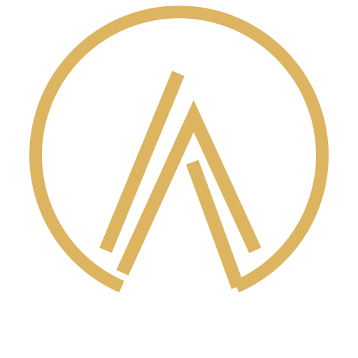
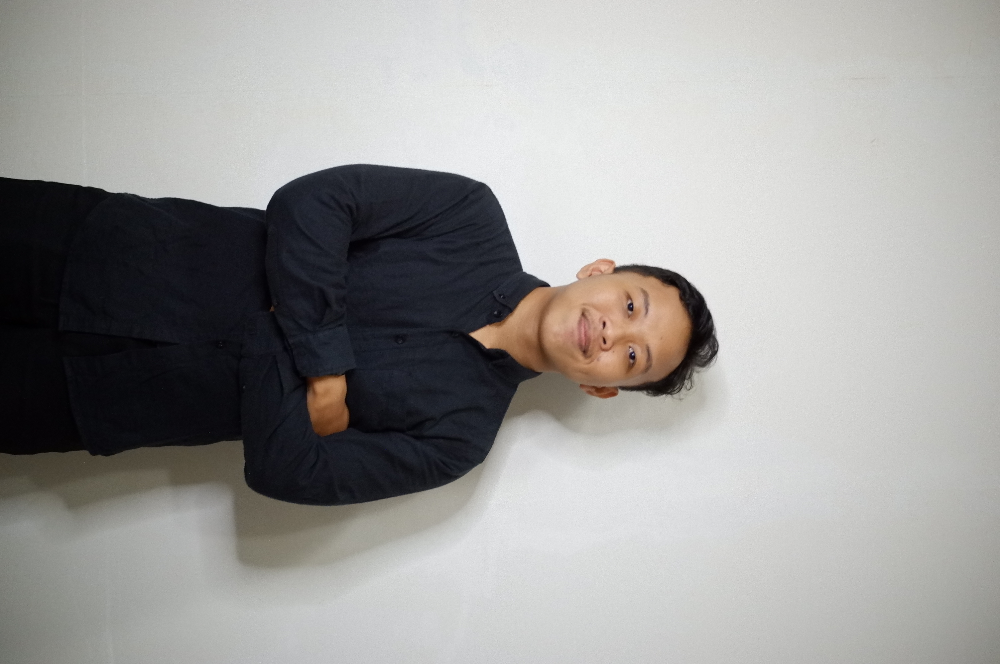
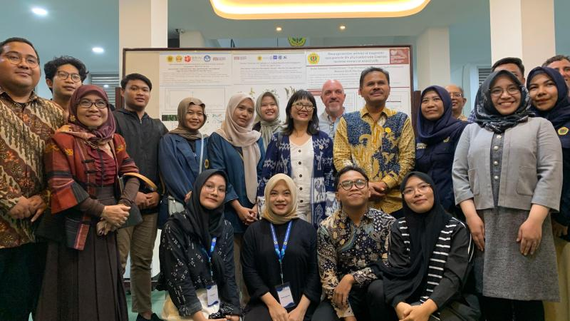
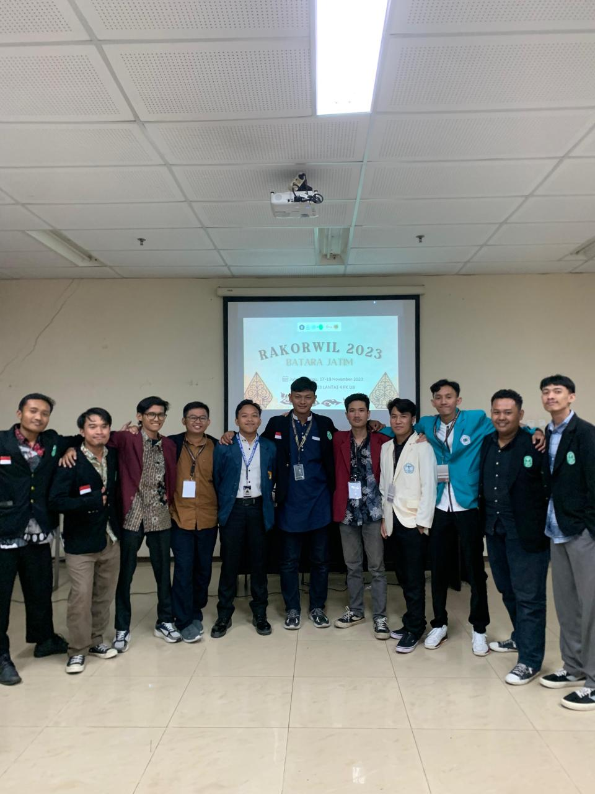
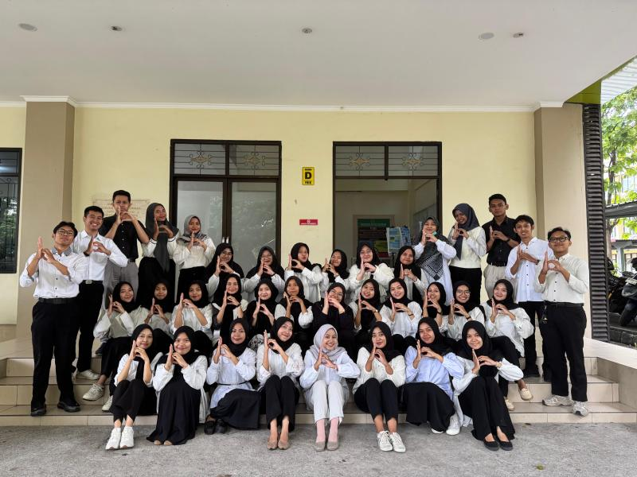
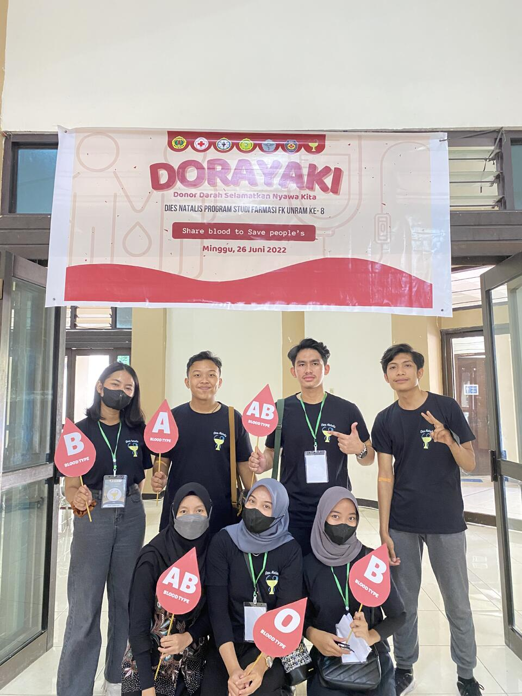
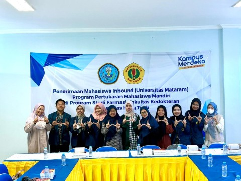

Pharmaceutical
Sciences
Building on a pharmacy education and continuing to grow professional knowledge through evidence-informed learning.

ADI TRI WIBOWOPORTFOLIOPHARMACY · RESEARCH · COMMUNICATION
Hello, I'm
Content Creator · Pharmaceutical & Nutraceutical Enthusiast · Digital Marketing Enthusiast
I bring together scientific curiosity, community experience, and digital communication to make ideas more meaningful and accessible.

A LITTLE INTRODUCTION
Bachelor of Pharmacy graduate from the University of Mataram with experience spanning nutraceutical research, community engagement, digital marketing, and educational content creation.
As a Team Leader in the MSIB Independent Study Program, I coordinated research-based projects in nutraceuticals and pharmaceutical sciences. I also joined the Merdeka Student Exchange Program at Hang Tuah University and took active roles in student organizations focused on community service and public health.
Today, I am interested in the pharmaceutical and nutraceutical industries, especially healthcare communication, science-driven marketing, branding, and digital content.
Connecting pharmaceutical knowledge, natural-product research, community initiatives, and digital storytelling.
Building on a pharmacy education and continuing to grow professional knowledge through evidence-informed learning.
Exploring the potential of macroalgae and natural compounds for nutraceutical and health-related applications.
Supporting health education, community outreach, and collaborative initiatives that create practical value.
Creating educational and promotional content, strengthening audience engagement, and communicating ideas clearly.
Professional roles in digital marketing, educational content, event operations, and student program coordination.
A collection of video content, social media projects, and published activities across platforms.
Student organizations helped me develop leadership, teamwork, and a stronger sense of community contribution.
Led community service initiatives, coordinated interdisciplinary activities, and managed team delegation and program timelines.
Supported public health outreach, community treatment, and health promotion programs with interdisciplinary teams.
Represented the University of Mataram at the regional coordination meeting hosted by Universitas Brawijaya.
Contributed to community education related to medicinal plants, ethnomedicine, and traditional health practices.
Selected academic and community projects reflecting my interest in marine natural resources and nutraceutical development.
NUTRACEUTICAL PROFILE · MARINE MACROALGAE
FUNCTIONAL FOOD & NATURAL COSMETICS
A glimpse of academic milestones, student collaboration, community service, and exchange experiences.

Minister Prof. Stella Christie, Ph.D., visited the University of Mataram Center for Marine Biorefineries with representatives from the University of California, Berkeley.

Representing the University of Mataram at the ISMAFARSI regional coordination meeting.

A moment with my class of 38 students, celebrating togetherness and shared learning.

An annual HMF community service initiative encouraging awareness and participation in blood donation.

Academic exchange experience with fellow inbound students during the independent student exchange program.
Read university featureAcademic work exploring macroalgae, natural-product potential, and scientific literature.
Tools and strengths developed through academic, organizational, and professional experiences.
University of Mataram · Aug 2021 – Feb 2026
Sep 2023 – Jan 2024 · GPA 3.38 / 4.00


LET'S CONNECT
For professional opportunities, research conversations, collaborations, or just to connect.